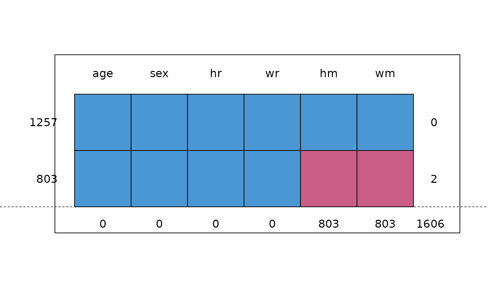

Dataset containing height and weight data (measured, self-reported) from two studies.
Format
A data frame with 2060 rows and 15 variables:
- src
Study, either
krulormgg(factor)- id
Person identification number
- pop
Population, all
NL(factor)- age
Age of respondent in years
- sex
Sex of respondent (factor)
- hm
Height measured (cm)
- wm
Weight measured (kg)
- hr
Height reported (cm)
- wr
Weight reported (kg)
- prg
Pregnancy (factor), all
Not pregnant- edu
Educational level (factor)
- etn
Ethnicity (factor)
- web
Obtained through web survey (factor)
- bm
BMI measured (kg/m2)
- br
BMI reported (kg/m2)
Source
Krul, A., Daanen, H. A. M., Choi, H. (2010). Self-reported and measured weight, height and body mass index (BMI) in Italy, The Netherlands and North America. European Journal of Public Health, 21(4), 414-419.
Van Keulen, H.M.,, Chorus, A.M.J., Verheijden, M.W. (2011). Monitor Convenant Gezond Gewicht Nulmeting (determinanten van) beweeg- en eetgedrag van kinderen (4-11 jaar), jongeren (12-17 jaar) en volwassenen (18+ jaar). TNO/LS 2011.016. Leiden: TNO.
Van der Klauw, M., Van Keulen, H.M., Verheijden, M.W. (2011). Monitor Convenant Gezond Gewicht Beweeg- en eetgedrag van kinderen (4-11 jaar), jongeren (12-17 jaar) en volwassenen (18+ jaar) in 2010 en 2011. TNO/LS 2011.055. Leiden: TNO. (in Dutch)
Van Buuren, S. (2018). Flexible Imputation of Missing Data. Second Edition. Chapman & Hall/CRC. Boca Raton, FL.
Details
This dataset combines two datasets: krul data (Krul, 2010) (1257
persons) and the mgg data (Van Keulen 2011; Van der Klauw 2011) (803
persons). The krul dataset contains height and weight (both measures
and self-reported) from 1257 Dutch adults, whereas the mgg dataset
contains self-reported height and weight for 803 Dutch adults. Section 7.3 in
Van Buuren (2012) shows how the missing measured data can be imputed in the
mgg data, so corrected prevalence estimates can be calculated.
Examples
md.pattern(selfreport[, c("age", "sex", "hm", "hr", "wm", "wr")])
#> age sex hr wr hm wm
#> 1257 1 1 1 1 1 1 0
#> 803 1 1 1 1 0 0 2
#> 0 0 0 0 803 803 1606
### FIMD Section 7.3.5 Application
bmi <- function(h, w) {
return(w / (h / 100)^2)
}
init <- mice(selfreport, maxit = 0)
#> Warning: Number of logged events: 2
meth <- init$meth
meth["bm"] <- "~bmi(hm,wm)"
pred <- init$pred
pred[, c("src", "id", "web", "bm", "br")] <- 0
imp <- mice(selfreport, pred = pred, meth = meth, seed = 66573, maxit = 2, m = 1)
#>
#> iter imp variable
#> 1 1 hm wm edu etn bm
#> Error in bmi(hm, wm): could not find function "bmi"
## imp <- mice(selfreport, pred=pred, meth=meth, seed=66573, maxit=20, m=10)
### Like FIMD Figure 7.6
cd <- complete(imp, 1)
#> Error in eval(expr, envir, enclos): object 'imp' not found
xy <- xy.coords(cd$bm, cd$br - cd$bm)
#> Error in eval(expr, envir, enclos): object 'cd' not found
plot(xy,
col = mdc(2), xlab = "Measured BMI", ylab = "Reported - Measured BMI",
xlim = c(17, 45), ylim = c(-5, 5), type = "n", lwd = 0.7
)
#> Error in eval(expr, envir, enclos): object 'xy' not found
polygon(x = c(30, 20, 30), y = c(0, 10, 10), col = "grey95", border = NA)
polygon(x = c(30, 40, 30), y = c(0, -10, -10), col = "grey95", border = NA)
abline(0, 0, lty = 2, lwd = 0.7)
idx <- cd$src == "krul"
#> Error in eval(expr, envir, enclos): object 'cd' not found
xyc <- xy
#> Error in eval(expr, envir, enclos): object 'xy' not found
xyc$x <- xy$x[idx]
#> Error in eval(expr, envir, enclos): object 'xy' not found
xyc$y <- xy$y[idx]
#> Error in eval(expr, envir, enclos): object 'xy' not found
xys <- xy
#> Error in eval(expr, envir, enclos): object 'xy' not found
xys$x <- xy$x[!idx]
#> Error in eval(expr, envir, enclos): object 'xy' not found
xys$y <- xy$y[!idx]
#> Error in eval(expr, envir, enclos): object 'xy' not found
points(xyc, col = mdc(1), cex = 0.7)
#> Error in eval(expr, envir, enclos): object 'xyc' not found
points(xys, col = mdc(2), cex = 0.7)
#> Error in eval(expr, envir, enclos): object 'xys' not found
lines(lowess(xyc), col = mdc(4), lwd = 2)
#> Error in eval(expr, envir, enclos): object 'xyc' not found
lines(lowess(xys), col = mdc(5), lwd = 2)
#> Error in eval(expr, envir, enclos): object 'xys' not found
text(1:4, x = c(40, 28, 20, 32), y = c(4, 4, -4, -4), cex = 3)
box(lwd = 1)
